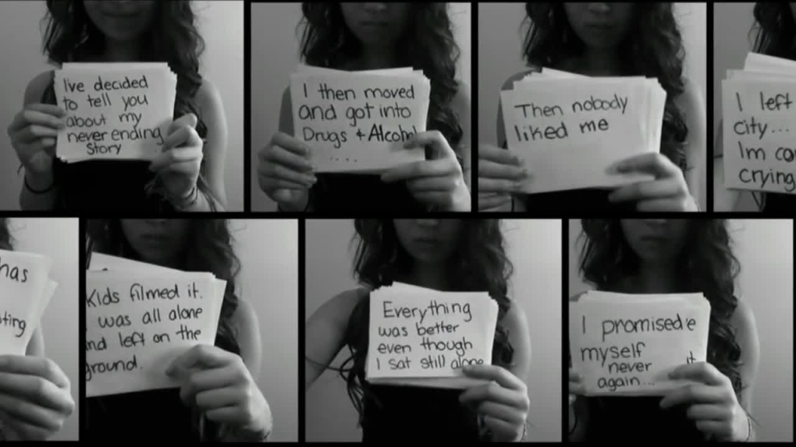
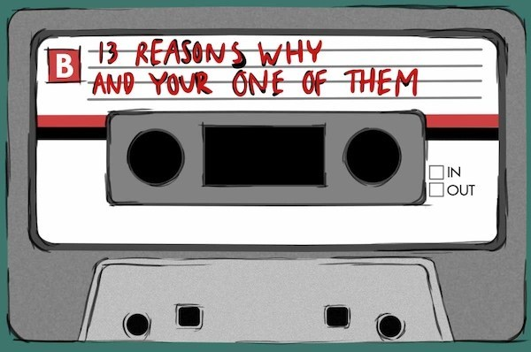

Definition
Mass Clusters
According to the Suicide Prevention Resource Center (SPRC), mass clusters are defined as suicides that cluster in time, regardless of geography. Oftentimes, mass clusters are triggered by the way newspapers and the media at large report on suicides by celebrities.
The Media
The Case of Marilyn Monroe
Marilyn Monroe’s suicide is a well-known example from history that launched a mass cluster of suicides. According to the Centre for Suicide Preventation, there was a 12% rise in suicide numbers during the month following her suicide. In particular, women in their 30’s were at higher risk of suicide following Marilyn’s death in 1962, according to an article in Scientific American. Subsequent studies surrounding celebrity suicides, such as that by singer Linkin Park, found similar parallels in the relationship between the media’s reporting of celebrity suicides and suicide rates at large.
Social Media
The Case of Amanda Todd
Image from Google ImagesAmanda Todd is another well-known example of the risk of mass cluster suicides when it comes to social media. Amanda was a 15 year-old who was a victim of cyberbullying, and in 2012, days before she took her own life, she posted a powerful video to YouTube describing the years of harassment and suffering she has faced using index cards. The video went viral, reaching 17 million views to date. Ultimately, it was the power of social media--Twitter, YouTube, Facebook, messaging--that allowed the video death to travel so vastly and quickly. However, the media is also a culprit no less, as they eagerly publicized her death over the news. Indeed, according to the Suicide Prevention Resource Center, the media ignored several major guidelines for responsible reporting on suicide.
Popular Culture
13 Reasons Why
Netflix’s hit show 13 Reasons Why, adapted from a novel of the same name, followed the story of a teenager, Clay, who discovers a box with 13 mixtapes at his door, and discovers they are recorded by his classmate Hannah before her suicide. In these tapes, Hannah reveals each of the 13 reasons, each relating to one of her classmates, that played a role in her decision to take her own life.
Image from Google ImagesThe sensationalization of this form of “revenge” suicide may influence teen viewers of the show to do the same, especially those who are at-risk. Indeed, according to the Journal of the American Academy of Child and Adolescent Psychiatry, that the release of 13 Reasons Why was associated with a significant increase in the monthly rate of suicide among young people aged 10-17 years. Apart from an increase in suicide rates, the 19 days following the show’s release saw a 19% increase in the number of Google searches for the term “suicide”--or in other words, an increase of 1.5 million queries--which likely corresponds to an increase in suicide ideation, according to the Journal of the American Medical Association. There is no question that the contents of this show is intensely problematic, to the point that Netflix itself issues a trigger warning about sensitive topics prior to each show. The question, then, is: why is Netflix even producing this show if they are aware that it may trigger copycat suicides?Many lives can be saved...
WHAT CAN I DO TO HELP?
- If you spot irresponsible reporting on suicide by the media, contact the journalist and the newspaper to make them aware and to push for editing or removal of the article.
- If you see the viral social media posts or videos detailing suicide on Facebook, Twitter, or YouTube and are concerned, flag or report to make administrators of these social media companies aware in hopes that they limit visibility of such posts.
- If you believe that shows like 13 Reasons Why are dangerous to impressionable teens, write to the directors and producers, and protest the show, perhaps by starting a hashtag movement against the show.